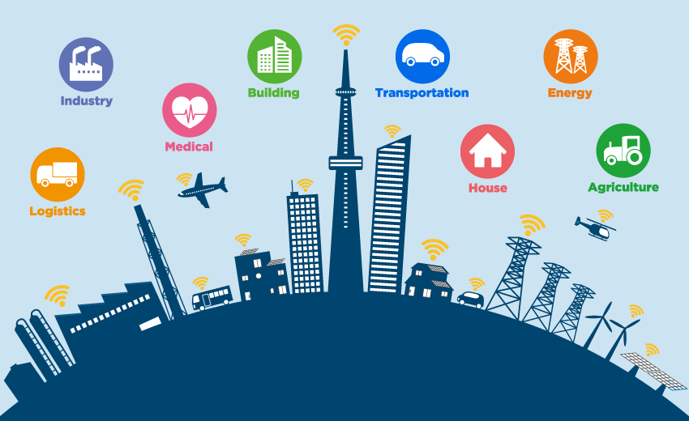
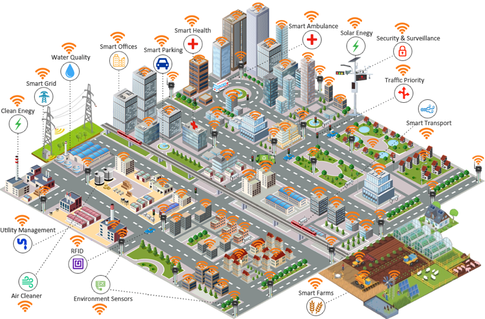

"Smart City Trends: The Latest Developments in Smart City Planning"

In recent years, the concept of smart cities has
evolved from a futuristic vision to an actionable reality. With technological advancements and innovative
policies, smart city planning is reshaping urban environments worldwide. Here’s a look at some of the latest
developments driving this transformation:
The Rise of IoT and Smart Infrastructure:
One of the cornerstone technologies in smart city
planning is the Internet of Things (IoT). Smart sensors and devices are increasingly integrated into urban
infrastructure, allowing for real-time data collection and analysis. From traffic management systems that
optimize traffic flow to smart bins that alert waste management services when they need to be emptied, IoT
is enhancing the efficiency of city services. This connectivity helps cities respond swiftly to issues,
improves resource management, and creates a more responsive urban environment.
Sustainable Solutions with Green Technologies:
Sustainability is at the heart of many smart city
initiatives. Cities are adopting green technologies to reduce their carbon footprint and promote
environmental stewardship. Innovations such as solar-powered streetlights, electric vehicle (EV) charging
stations, and green roofs are becoming more common. These technologies not only contribute to reducing
greenhouse gas emissions but also enhance the quality of urban life by promoting cleaner air and energy
efficiency.
Data-Driven Decision Making:
Data is a powerful tool for smart cities, enabling
informed decision-making and policy development. Advanced data analytics platforms process vast amounts of
information collected from various sources, including traffic cameras, weather sensors, and social media. By
analyzing this data, city planners can identify trends, predict potential problems, and design solutions
tailored to the specific needs of their communities. This data-driven approach leads to more effective
policies and targeted interventions that enhance overall urban management.

Enhancing Public Safety with Smart Technology:
Smart technology is also making cities safer. Surveillance systems equipped with artificial intelligence
(AI) can detect and alert authorities to unusual activities, improving emergency response times.
Additionally, smart lighting systems that adjust based on real-time conditions can enhance visibility in
public spaces, reducing the risk of accidents and crime. These advancements help create a safer urban
environment by leveraging technology to proactively address safety concerns.
Citizen Engagement and Inclusivity:
Involving citizens in the development of smart cities
is crucial for their success. Many cities are implementing platforms that allow residents to provide
feedback, report issues, and participate in decision-making processes. By fostering engagement and
inclusivity, smart city initiatives ensure that the solutions implemented meet the needs of all community
members. This collaborative approach helps build trust between citizens and city officials while creating a
sense of ownership and involvement in the city's growth.
Innovative Mobility Solutions:
Mobility is a key focus area for smart cities, with
advancements aimed at improving transportation efficiency and reducing congestion. Ride-sharing services,
autonomous vehicles, and smart traffic management systems are transforming urban mobility. By integrating
these technologies, cities can offer more flexible and efficient transportation options, reduce traffic
jams, and lower emissions. Innovations such as smart parking solutions and real-time transit information
also enhance the overall travel experience for residents.
Resilient Urban Design:
As cities face the challenges of climate change and
rapid urbanization, resilient urban design is becoming increasingly important. Smart city planning
incorporates adaptive strategies to mitigate the impacts of extreme weather events and other disruptions.
This includes developing infrastructure that can withstand natural disasters, creating green spaces to
manage heat, and implementing flood management systems. Resilient design ensures that cities can recover
quickly from adverse events while maintaining functionality and livability.
Conclusion:
The landscape of smart city planning is continuously
evolving, driven by technological advancements and innovative policies. As cities embrace IoT, green
technologies, data analytics, and citizen engagement, they are becoming more efficient, sustainable, and
resilient. By staying abreast of these trends, urban planners and policymakers can create smarter cities
that enhance the quality of life for their residents and address the challenges of the modern world.